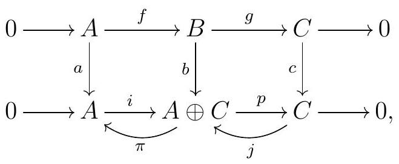
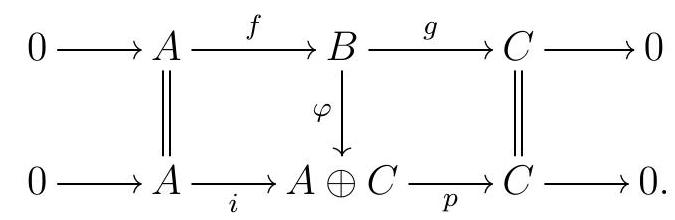
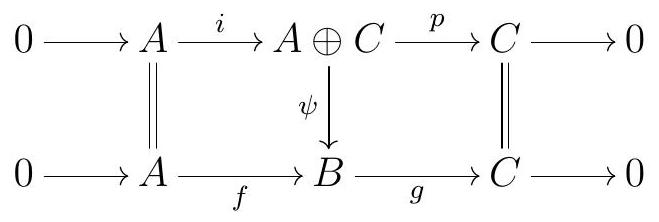
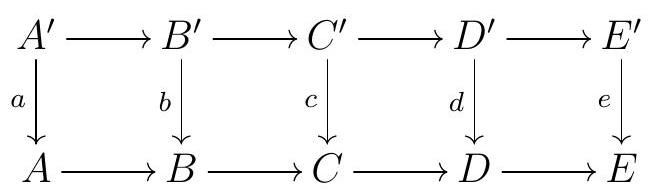
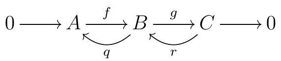
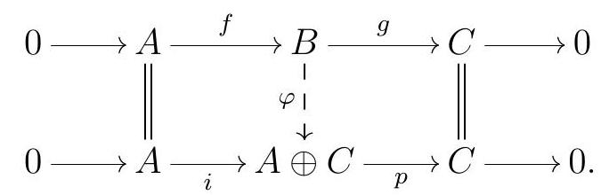

Section 2.2 Split Exact Sequences
Subsection Definition and the Splitting Lemma
“The split in you is clear.”―John Cantwell Kiley
In this section, we will discuss short exact sequences of modules in a bit more detail. We note, however, that everything we will discuss here can be extended for short exact sequences of complexes, and that the generalization is not too difficult: one just needs to replace modules with complexes and maps of modules by maps of complexes.
Example 2.29. Trivial Short Exact Sequences.
Fix a ring \(R\text{,}\) and let \(A\) and \(C\) be \(R\)-modules. Consider the inclusion \(i: A \rightarrow A \oplus C\) of \(A\) into the first component of the direct sum, and the projection map \(\pi: A \oplus C \rightarrow C\) onto the second component of the product. These two maps fit into a short exact sequence
\begin{equation*}
0 \longrightarrow A \stackrel{i}{\longrightarrow} A \oplus C \stackrel{p}{\longrightarrow} C \longrightarrow 0
\end{equation*}
These are sometimes called trivial short exact sequences.
On the one hand, the short exact sequences that look like this one are very important; on the other hand, not all short exact sequences are of this type.
Definition 2.30. Split Short Exact Sequences.
We say that a short exact sequence
\begin{equation*}
0 \longrightarrow A \longrightarrow B \longrightarrow C \longrightarrow 0
\end{equation*}
splits or is a split short exact sequence if it is isomorphic to
\begin{equation*}
0 \longrightarrow A \stackrel{i}{\longrightarrow} A \oplus C \stackrel{p}{\longrightarrow} C \longrightarrow 0
\end{equation*}
where \(i\) is the inclusion of the first component and \(p\) is the projection onto the second component.
Lemma 2.31. Splitting Lemma.
Consider the short exact sequence
\begin{equation*}
0 \longrightarrow A \stackrel{f}{\longrightarrow} B \stackrel{g}{\longrightarrow} C \longrightarrow 0
\end{equation*}
of \(R\)-modules. The following are equivalent:
- There exists a homomorphism of \(R\)-modules \(q: B \longrightarrow A\) such that \(q f=\operatorname{id}_{A}\text{.}\)
- There exists a homomorphism of \(R\)-modules \(r: C \longrightarrow B\) such that \(g r=\operatorname{id}_{C}\text{.}\)
- The short exact sequence splits.
Proof: \(3\Rightarrow 1\) and \(3\Rightarrow 2\).
First, we will show that c implies a and b. If the sequence splits, then consider an isomorphism of complexes

meaning that the diagram commutes and \(a, b\text{,}\) and \(c\) are isomorphisms of \(R\)-modules, \(i\) is the inclusion in the first component, and \(p\) is the projection onto the second component. Let \(\pi: A \oplus C \longrightarrow A\) be the projection onto the first component, and \(j: C \longrightarrow A \oplus C\) be the inclusion onto the first component. Now consider the maps \(q:=a^{-1} \pi b\) and \(r:=b^{-1} j c\text{.}\) Then
\begin{equation*}
\begin{array}{rlr}
q f & =a^{-1} \pi b f & \\
& =a^{-1} \pi i a & \text { by commutativity } \\
& =a^{-1} a & \text { because } \pi i=\mathrm{id}_{A} \\
& =1_{A} &
\end{array}
\end{equation*}
and
\begin{equation*}
\begin{aligned}
g r & =g b^{-1} j c & & \\
& =c^{-1}(c g) b^{-1} j c & & \text { multiplying by } c^{-1} c=1_{C} \\
& =c^{-1}(p b) b^{-1} j c & & \text { by commutativity } \\
& =c^{-1} p j c & & \text { because } b b^{-1}=1_{B} \\
& =c^{-1} c & & \text { because } p j=\mathrm{id}_{C} \\
& =1_{C} . & &
\end{aligned}
\end{equation*}
Therefore, c implies a and b.
Proof: \(1\Rightarrow 3\).
Now suppose that a holds, and let’s show that the sequence splits. First, we need to show that \(B \cong A \oplus C\text{.}\) Every \(b \in B\) can be written as
\begin{equation*}
b=(b-f q(b))+f q(b)
\end{equation*}
where \(f q(b) \in \operatorname{im} f \cong A\text{,}\) and
\begin{equation*}
q(b-f q(b))=q(b)-\underbrace{q f}_{\operatorname{id}_{A}}(q(b))=q(b)-q(b)=0
\end{equation*}
so \(b-f q(b) \in \operatorname{ker} q\text{.}\) This shows that \(B=\operatorname{im} f+\operatorname{ker} q\text{.}\) Moreover, if \(f(a) \in \operatorname{ker} q\text{,}\) then \(a=q f(a)=0\text{,}\) so \(\operatorname{im} f \cap \operatorname{ker} q=0\text{,}\) and \(B=\operatorname{im} f \oplus \operatorname{ker} q\text{.}\) Now when we restrict \(g\) to \(\operatorname{ker} q, g\) becomes injective. We claim it is also surjective, and thus an isomorphism. Indeed, for any \(c \in C\) we can pick \(b \in B\) such that \(g(b)=c\text{,}\) since \(g\) is surjective, and we showed that we can write \(b=f(a)+k\) for some \(k \in \operatorname{ker} q\text{.}\) Then
\begin{equation*}
g(k)=\underbrace{g f}_{0}(a)+g(k)=g(b)=c.
\end{equation*}
Finally, note that \(\operatorname{im} f \cong A\text{,}\) so we conclude that \(B \cong A \oplus C\text{,}\) via the isomorphism \(\varphi\) given by
\begin{equation*}
\begin{aligned}
& B \longrightarrow \operatorname{im} f \oplus \operatorname{ker} q \longrightarrow A \oplus C \\
& b \longmapsto(f q(b), b-f q(b)) \longmapsto(q(b), g(b)) .
\end{aligned}
\end{equation*}
Since \(g f=0\) and \(q f=\operatorname{id}_{A}, \varphi f(a)=(q f(a), 0)=(a, 0)\text{,}\) so \(\varphi f=i\text{,}\) where \(i: A \longrightarrow A \oplus C\) is the inclusion on the first factor. If \(p: A \oplus C \longrightarrow C\) denotes the projection onto the second factor, \(p \varphi=g\text{.}\) Together, these two facts say that the following is a map of complexes:

Since \(\varphi\) is an isomorphism, so is our map of complexes, and thus our original sequence is a split exact sequence. This shows that a implies \(c\text{.}\)
Proof: \(2\Rightarrow 3\).
Now assume b holds. Every \(b \in B\) can be written as
\begin{equation*}
b=(b-r g(b))+r g(b)
\end{equation*}
where \(r g(b) \in \operatorname{im} r\) and
\begin{equation*}
g(b-r g(b))=g(b)-\underbrace{g r}_{\mathrm{id}_{C}}(g(b))=g(b)-g(b)=0
\end{equation*}
so \(b-r g(b) \in \operatorname{ker} g\text{.}\) This shows that \(B=\operatorname{ker} g+\operatorname{im} r\text{.}\) Moreover, if \(r(c) \in \operatorname{ker} g\text{,}\) then
\begin{equation*}
c=\operatorname{id}_{C}(c)=g r(c)=0
\end{equation*}
Therefore, \(B=\operatorname{ker} g \oplus \operatorname{im} r\text{.}\) Now \(r\) is injective, since \(r(c)=0 \Longrightarrow c=g r(c)=0\text{,}\) and thus \(\operatorname{im} r \cong C\text{.}\) Since \(\operatorname{ker} g=\operatorname{im} f \cong A\text{,}\) we conclude that \(B \cong A \oplus C\text{,}\) via the isomorphism
\begin{equation*}
\begin{aligned}
& A \oplus C \stackrel{\psi}{\longrightarrow} B \\
& (a, c) \longmapsto f(a)+r(c) .
\end{aligned}
\end{equation*}
Finally, let \(i: A \longrightarrow A \oplus C\) denote the inclusion of the first factor, and \(p: A \oplus C \longrightarrow C\) denote the projection onto the second factor. By construction, \(\psi i=f\text{.}\) Moreover,
\begin{equation*}
g \psi(a, c)=\underbrace{g f}_{0}(a)+\underbrace{g r}_{\mathrm{id}_{C}}(c)=c
\end{equation*}
so \(g \psi=p\text{.}\) Together, these say that the diagram

commutes, and must then be an isomorphism of short exact sequences.
Definition 2.32. Splittings.
Given a split short exact sequence
\begin{equation*}
0 \longrightarrow A \stackrel{f}{\longrightarrow} B \stackrel{g}{\longrightarrow} C \longrightarrow 0
\end{equation*}
maps \(q\) and \(r\) satisfying the conditions of the Splitting Lemma are called splittings.
Remark 2.33.
In the split short exact sequence
\begin{equation*}
0 \longrightarrow A \stackrel{i}{\longrightarrow} A \oplus C \stackrel{p}{\longrightarrow} C \longrightarrow 0
\end{equation*}
the canonical projection \(q: A \oplus C \rightarrow A\) and the usual inclusion \(r: C \rightarrow A \oplus C\) are splittings.
Subsection When Do Short Exact Sequences Split?
“”―
The Rank-Nulity Theorem can be recast in this setting as a consequence of the fact that every short exact sequence of \(k\)-vector spaces splits.
Exercise 2.34. Splittings in Vector Spaces.
- Let \(k\) be a field. Show that every short exact sequence of \(k\)-vector spaces splits.
- Prove the Rank-Nulity Theorem using Exercise 2.34: show that given any linear transformation \(T: V \rightarrow W\) of \(k\)-vector spaces,\begin{equation*} \operatorname{dim}(\operatorname{im} T)+\operatorname{dim}(\operatorname{ker} T)=\operatorname{dim} V \end{equation*}
Solution.
-
Let \(0 \longrightarrow A \overset{f}{\longrightarrow} B \overset{g}{\longrightarrow} C \longrightarrow 0\) be a short exact sequence of \(k\)-vector spaces. Thus \(f\) is injective. Let \(U\) be a basis for \(A\text{.}\) As \(f\) is injective it maps linearly independent sets to linearly independent sets, and so \(f(U) = V\text{,}\) where \(V\) is a linearly independent in \(B\text{.}\)As proved so deliciously in 818 (and 815), in vector spaces we can extend any linearly independent set into a basis (with some help from Zorn), and thus we extend \(V\) into a basis \(V'\text{.}\) Using the UMP for free modules there exists a unique \(k\)-vector space homomorphism \(q\) such that \(q(b) = h(b)\) for all \(b \in B\text{,}\) where \(h: W' \longrightarrow A\) maps \(w_i\) to \(v_i\) whenever \(f(v_i) = w_i\text{.}\)Let \(a \in A\) and consider \(qf(a)\text{.}\) As \(a = \sum\limits_ix_iv_i\) for \(x_i \in k\) and \(v_i \in V\text{,}\)\begin{equation*} qf(a) = qf\left(\sum\limits_ix_iv_i\right)=q\left(\sum\limits_ix_iw_i\right)=\sum\limits_ix_iq(w_i)= \sum\limits_ix_ih(w_i)=\sum\limits_ix_iv_i= a. \end{equation*}Thus \(qf = \mathop{\mathrm{id}}_A\text{.}\) Therefore, by the Splitting Lemma, every exact sequence of \(k\)-vector spaces splits.
- Let \(T:V \to W\) be a linear transformation. Then \(\mathop{\mathrm{im}}(T)\) and \(\ker(T)\) are both subspaces (just in different places). Consider the sequence\begin{equation*} 0 \longrightarrow \ker T \overset{\iota}{\longrightarrow} V \overset{T'}{\longrightarrow} \mathop{\mathrm{im}}T \longrightarrow 0 \end{equation*}where \(i\) is the natural inclusion and \(T'\) is \(T\) restricted to its image. As \(\iota\) is injective and \(T'\) is surjective (by definition), this sequence is exact. By part \((a)\text{.}\) the sequence splits. Thus \(V = \ker T \oplus \mathop{\mathrm{im}}T\text{,}\) which implies that \(\dim V = \dim (\ker T) + \dim (\mathop{\mathrm{im}}T)\text{,}\) completing the proof.
But over a general ring, not every short exact sequence splits.
Example 2.35.
The short exact sequence
\begin{equation*}
0 \longrightarrow \mathbb{Z} \stackrel{2}{\longrightarrow} \mathbb{Z} \longrightarrow \mathbb{Z} / 2 \longrightarrow 0
\end{equation*}
is not split. Indeed, \(\mathbb{Z}\) does not have any 2 -torsion elements, so it is not isomorphic to \(\mathbb{Z} \oplus \mathbb{Z} / 2\text{.}\)
An alternative explanation is that there is no splitting to the inclusion \(\mathbb{Z} \stackrel{2}{\longrightarrow} \mathbb{Z}\text{.}\) On the one hand, every \(\mathbb{Z}\)-module map is given by multiplication by a fixed integer \(n\text{,}\) so a splitting \(f: \mathbb{Z} \longrightarrow \mathbb{Z}\) would be of the form \(f(a)=n a\) for some fixed \(n\text{.}\) On the other hand, our proposed splitting \(f\) must send \(2\) to \(1\) , but there is no integer solution \(n\) to \(2 n=f(2)=1\text{.}\)
More surprisingly, a short exact sequence of the form
\begin{equation*}
0 \longrightarrow A \stackrel{f}{\longrightarrow} A \oplus C \stackrel{g}{\longrightarrow} C \longrightarrow 0
\end{equation*}
is not necessarily split, not unless \(f\) is the inclusion of the first component and \(g\) is the projection onto the second component, as the next example will show.
Example 2.36.
Consider the short exact sequence
\begin{equation*}
0 \longrightarrow \mathbb{Z} /(2) \stackrel{f}{\longrightarrow} \mathbb{Z} /(4) \stackrel{g}{\longrightarrow} \mathbb{Z} /(2) \longrightarrow 0
\end{equation*}
where \(f\) is the inclusion of the subgroup generated by 2, so \(f(1+(2))=2+(4)\text{,}\) and \(g\) is the quotient onto that subgroup, meaning \(g(1)=1\text{.}\) This is not a split short exact sequence, because \(\mathbb{Z} /(4) \nsucceq \mathbb{Z} /(2) \oplus \mathbb{Z} /(2)\text{.}\) Now let
\begin{equation*}
M:=\bigoplus_{\mathbb{N}}(\mathbb{Z} /(2) \oplus \mathbb{Z} /(4))
\end{equation*}
be the direct sum of infinitely many copies of \(\mathbb{Z} /(2) \oplus \mathbb{Z} /(4)\text{.}\) Then
\begin{equation*}
\mathbb{Z} /(2) \oplus M \cong M \cong M \oplus \mathbb{Z} /(4)
\end{equation*}
and the sequence
\begin{equation*}
0 \longrightarrow \mathbb{Z} /(2) \stackrel{h}{\longrightarrow} \mathbb{Z} /(4) \oplus M \stackrel{t}{\longrightarrow} \mathbb{Z} /(2) \oplus M \longrightarrow 0
\end{equation*}
with \(h(a)=(f(a), 0)\) and \(t(a, m)=(g(a), m)\) is still exact. The middle term is indeed isomorphic to the direct sum of the other two:
\begin{equation*}
\mathbb{Z} /(4) \oplus M \cong M \cong(M \oplus \mathbb{Z} /(2)) \oplus \mathbb{Z} /(2)
\end{equation*}
And yet this is not a split exact sequence: if we had a splitting \(q: \mathbb{Z} /(4) \oplus M \longrightarrow \mathbb{Z} /(2)\) of \(h\text{,}\) then its restriction to the first factor would give us a splitting \(\mathbb{Z} /(4) \longrightarrow \mathbb{Z} /(2)\) of \(f\text{,}\) which we know cannot exist, since
\begin{equation*}
0 \longrightarrow \mathbb{Z} /(2) \stackrel{f}{\longrightarrow} \mathbb{Z} /(4) \stackrel{g}{\longrightarrow} \mathbb{Z} /(2) \longrightarrow 0
\end{equation*}
does not split.
Given splittings \(q\) and \(r\) for a short exact sequence as in Lemma 2.31, we can quickly show that our short exact sequence splits using the Five Lemma. To prove the Five Lemma, one needs to use diagram chasing. Diagram chasing is a common technique in homological algebra, which essentially consists of tracing elements around in the diagram. We will see some examples of diagram chasing in the next section.
Exercise 2.37. The Five Lemma.
Consider the following commutative diagram of \(R\)-modules with exact rows:

Show that if \(a, b, d\text{,}\) and \(e\) are isomorphisms, then \(c\) is an isomorphism.
Remark 2.38.
Given a short exact sequence, suppose we have \(R\)-module homomorphisms \(q\) and \(r\)

such that \(q f=\operatorname{id}_{A}\) and \(r g=\operatorname{id}_{C}\text{.}\) Then we get an induced map
\begin{equation*}
\begin{aligned}
& B \stackrel{\varphi}{\longrightarrow} A \oplus C \\
& b \longmapsto(q(b), g(b))
\end{aligned}
\end{equation*}
such that the diagram

commutes. The The Five Lemma guarantees that \(\varphi\) must be an isomorphism, so our diagram is an isomorphism of short exact sequences.
There are many ways in which \(R\)-Mod behaves better than the category of groups, and this is one of them.
Remark 2.39.
The Splitting Lemma does not hold if we replace \(R\)-modules with the category \(\Grp\) of groups. For example, consider the symmetric group on 3 elements \(S_{3}\) and the inclusion \(A_{3} \hookrightarrow S_{3}\) of the alternating group in \(S_{3}\text{.}\) Notice that \(A_{3}\) is precisely the kernel of the sign map
\begin{equation*}
\operatorname{sign}: S_{3} \longrightarrow \mathbb{Z} / 2
\end{equation*}
which sends even permutations to \(0\) and odd permutations to \(1\) . Therefore,
\begin{equation*}
0 \longrightarrow A_{3} \longrightarrow S_{3} \longrightarrow \mathbb{Z} / 2 \longrightarrow 0
\end{equation*}
is a short exact sequence. When writing exact sequences of nonabelian groups such as this one, one sometimes uses \(\{e\}\) for instead of \(0\text{,}\) to indicate that trivial group. So our short exact sequence is
\begin{equation*}
\{e\} \longrightarrow A_{3} \longrightarrow S_{3} \longrightarrow \mathbb{Z} / 2 \longrightarrow\{e\}
\end{equation*}
Moreover, this exact sequence is not split, since \(S_{3}\) is not abelian but \(A_{3} \oplus \mathbb{Z} / 2\) is, and thus \(S_{3} \neq A_{3} \oplus \mathbb{Z} / 2\text{.}\) However, any group homomorphism \(u: \mathbb{Z} / 2 \rightarrow S_{3}\) defined by sending the generator to any two cycle is a splitting for our short exact sequence, meaning signo \(u=\mathrm{id}_{\mathbb{Z} / 2}\text{.}\)
Funny enough, there is no splitting for the inclusion \(A_{3} \subseteq S_{3}\text{,}\) since there are no nontrivial homomorphisms \(S_{3} \rightarrow A_{3}: A_{3}\) has no elements of order \(2\text{,}\) so a group homomorphism \(S_{3} \rightarrow A_{3}\) must send every \(2\)-cycle in \(S_{3}\) must be sent to the identity, but \(2\)-cycles generate \(S_{3}\text{.}\)
We will return to the topic of split short exact sequences when we talk about projective and injective modules.
Exercise 2.40.
Fix a ring \(R\text{.}\) Show that if \(F\) is a free \(R\)-module, then every short exact sequence of \(R\)-modules
\begin{equation*}
0 \longrightarrow A \longrightarrow B \longrightarrow F \longrightarrow 0
\end{equation*}
splits.